We've updated this course, so the videos don't exactly match the lessons. However, we've included them for you to review, and we will update them in a future release.
After completing this lesson, you’ll be able to:
In this lesson, you will:
We've updated this course, so the videos don't exactly match the lessons. However, we've included them for you to review, and we will update them in a future release.
The key to improving transformer performance is reducing the memory used, particularly in group-based transformers. To do this, you can either reduce the amount of data entering a group-based transformer or use parameters that, in the right conditions, can reduce the need to store data in memory.
One simple way to potentially get a "free" performance improvement is to upgrade your transformers.
If your workspace has transformers that can be upgraded, you will see a section labeled "Upgradable Transformers" in the Navigator:
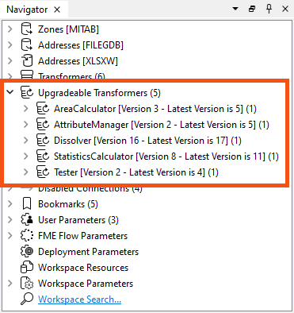
You can then expand each transformer and right-click to select Upgrade transformer to upgrade them. A dialog will confirm your wish to proceed and inform you that the new version might introduce breaking changes. You should back up your workspace in case that happens:
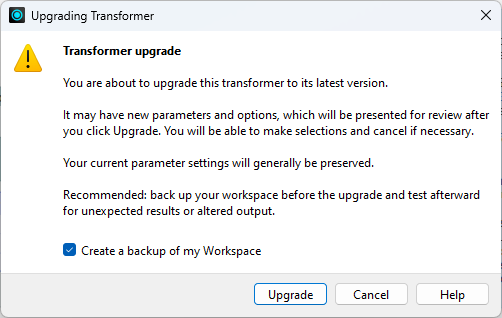
A dialog will then open to show the changes in the GUI to the transformer:
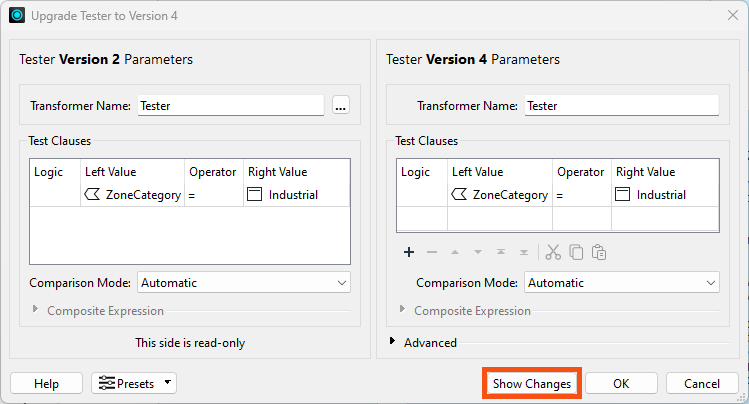
You can click the Show Changes button to get a written list of changes:
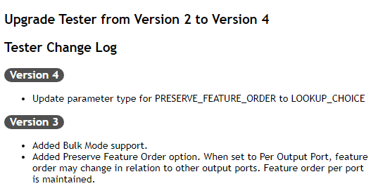
Upgrading transformers only sometimes makes them operate faster, because some changes are functional or cosmetic, and an upgrade might slightly change their results. Therefore, upgrading all transformers is only advisable after checking what the upgrade involves.
You can right-click Upgradable Transformers and choose Upgrade All Transformers. We only recommend this if you are an experienced FME user, as upgrading many transformers at once can make it harder to identify any problems introduced by the upgrade.
You can also update by selection or transformer type. A confirmation dialog asks if you'd like to create a backup of your workspace before updating, and you can optionally generate a transformer upgrade report.
Although the order of transformers can sometimes vary without affecting the result, at other times, it is essential to get the correct order for performance reasons.
FME will perform better when you minimize the data going into group-based transformers. One scenario is to put feature-based filter transformers before the group-based process, not after it. To show a counter-example, the author below filters data after statistics have been calculated:
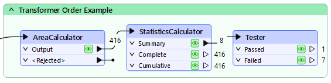
Filtering the data before calculating the statistics would be more sensible; otherwise, FME wastes time processing features that are eventually ignored.
The best way to remember this is: Filter, Remove, Action!
In other words, filter first, then remove attributes, then act.
A standard parameter available in most group-based transformers is called "Complete Groups" and appears under Group Processing:
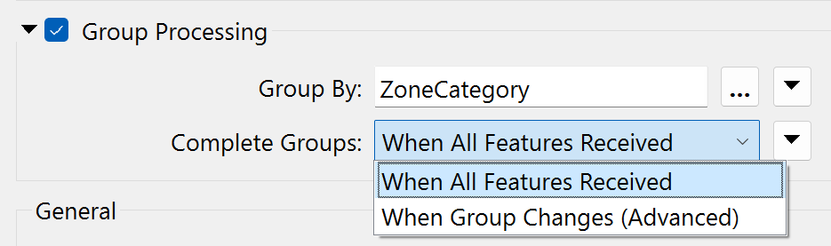
When set to When All Features Received, all the features are stored in memory until the transformer finishes processing. Then, groups are formed. The transformer is blocking data from proceeding.
When the parameter is set to When Group Changes (Advanced), FME processes groups as they become available. That way, less data is stored in memory, and processing is more efficient.
The condition for applying this parameter is that the groups of features are pre-sorted into their groups.
For example, in the above screenshot, the user uses the ZoneCategory attribute as a group-by parameter (i.e., zones are dissolved together where they are in the same category). If the incoming data is sorted in order by ZoneCategory, then the user can set the Complete Groups parameter and allow FME to process the data more efficiently.
When using Input Ordered By Group on a transformer with two (or more) input ports, you need to arrange data to arrive in group order (Port 1, Group A, Port 2, Group A, Port 1, Group B, Port 2, Group B, etc.). It's more than just a case of each data stream being ordered correctly; you need to alternate streams/ports for each group, which is challenging.
Besides the Complete Groups parameter, some transformers have unique parameters for performance improvements. Many of these specify one type of feature to arrive "first."
For example, the PointOnAreaOverlayer transformer expects two sets of data: Points and Areas. By default, FME requires all incoming Points and Areas because it needs to be sure it has ALL of the Areas before processing any Points.
But, if FME knows the Area features will arrive first (i.e., the first Point feature signifies the end of the Areas), then it doesn’t need all Point features. It can process each one immediately because it knows there are no more Areas it could match against.
The user specifies that this is true using the parameter Areas First:
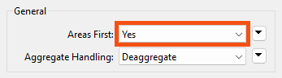
But how does a user ensure the Area features arrive first? Well, like writers, you can change the order of readers in the Navigator so that the reader at the top of the list is read first.
Changing the reader order doesn’t improve performance per se, but it does let you apply performance-improving parameters like the above.
As mentioned earlier, reducing data helps performance by saving FME from either holding it in memory or caching it to a disk.
However, reducing the number of features and the size of each feature helps.
One aspect of this is attributes. Carrying attributes through a translation impacts performance, so if the attributes are not required in the output, it’s best to remove them as early as possible in the translation.
For example, when the reader and writer schemas look like this:
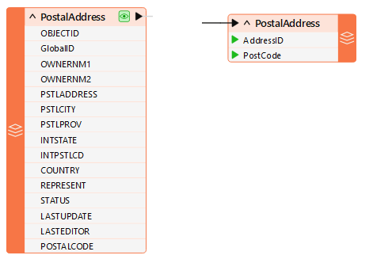
...it makes sense to remove excess attributes from the translation as soon as possible.
There are two ways to remove attributes. Some reader formats (but not all) have a setting in the reader feature type to avoid reading excess attributes in the first place:
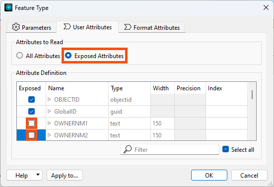
With that, you can ensure that only exposed attributes are read.
For database formats, FME won't read unexposing attributes on reader feature types, offering a performance improvement.
For non-database formats, FME still reads the unexposed attributes, but it won't show them anywhere downstream and won't write them out. There is no direct performance benefit on reading, but it saves the performance cost of removing them and can clean up your attribute lists.
The other way to remove attributes is by using a transformer (AttributeManager, AttributeRemover, or AttributeKeeper) directly after the source feature type:
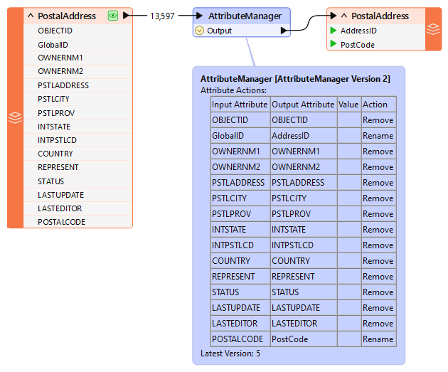
This ensures that the extra attributes don't drain resources when processed by further transformers.
One specific type of attribute to beware of is a List. In FME, a list can have multiple values, significantly draining resources.
For example, if you use a DatabaseJoiner to join a feature to 1,000 records, the resulting list for that feature will have 1,000 sets of records. This is bad enough, but if you explode the list and keep all of the original attributes, there will be 1,000 features, each with its own attributes!
In general, beware of unnecessarily creating lists and keeping them in a workspace beyond the point at which they are still used.
Like attributes, geometry can be removed from a feature, in this case, using the GeometryRemover transformer.
Many FME users create translations that handle tabular – non-spatial – data. If you read a spatial dataset and write it in a tabular format, remove the geometry early in the workspace, just as you would an attribute.
Another particular problem is carrying spatial data around as attributes. Spatial database formats, for example Oracle or GeoMedia, usually store geometry within a field in the database, such as GEOM. When FME reads the data, it converts the GEOM field into FME geometry and drops the field from the data.
However, if you read a geometry table with a non-geometry reader, the translation could end up with the geometry stored as an FME attribute. A similar thing could happen when a workspace reads only one geometry column when multiple geometry tables exist.
Geometry will create substantial and complex attributes, which take up a lot of resources. If you don’t need them, then it’s worth removing them.
FME's engine is gradually being updated to use a methodology we call bulk mode (previously known as feature tables).
It's not a tool designed for user control; instead, bulk mode is a new way to transport features through the workspace. Bulk mode substantially speeds up a workspace, its translations, and its transformations. If you see a log message about bulk mode (or sometimes feature tables), this technology is what it refers to.
As more transformers support bulk mode, expect performance to improve. However, you must upgrade transformers to benefit from this change. Look for Upgradable Transformers in the Navigator window and use right-click > Show Changes to find out if the upgrade includes bulk mode support:
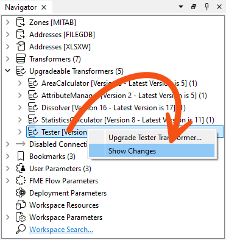

Jennifer is finishing her code review of a colleague's public art workspace. The readers and writers are efficient now, but nobody has looked at the transformers: many are running old versions, and the bookmark that prepares data for the spreadsheet sorts the features before it filters them. Jennifer needs to work through them before the workspace goes into production.
In this exercise, you will:
Nine transformers in this workspace are running older versions. Upgrading can offer the closest thing to a free performance gain, because newer versions may add bulk mode support, but an upgrade can also change results, so it is worth reading what each one involves.
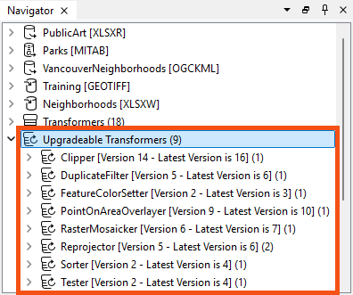
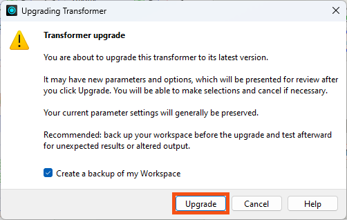
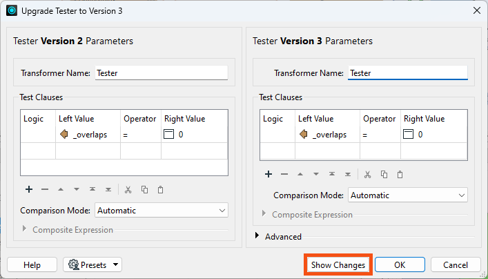
The Prepare Data for Excel Writer bookmark sorts the data before it filters out unwanted features and strips unwanted attributes. The sort is therefore doing work on features and attributes that are about to be discarded, which is the opposite of the order you want: filter, remove, act.
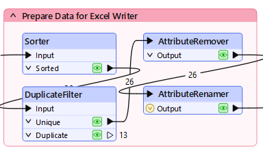
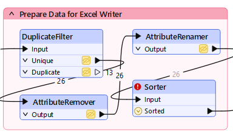
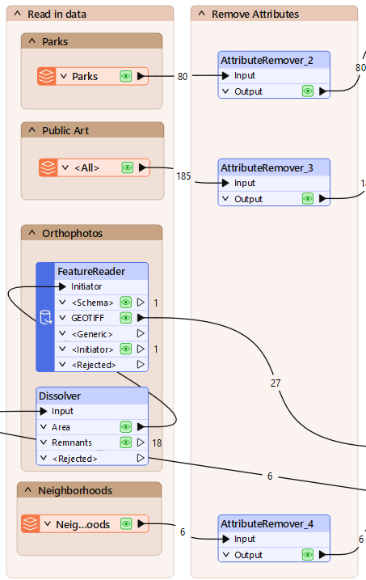
The Clipper and the PointOnAreaOverlayer each offer a parameter that lets FME release features as they arrive instead of holding all of them in memory. Both are only safe when one set of features is guaranteed to arrive first, and that is a condition you have to create rather than assume. Group Processing does not apply to either one here, because neither uses a Group By.
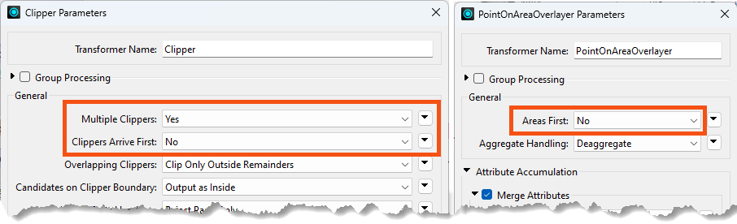
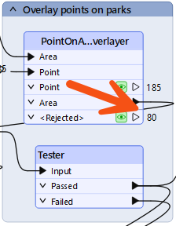
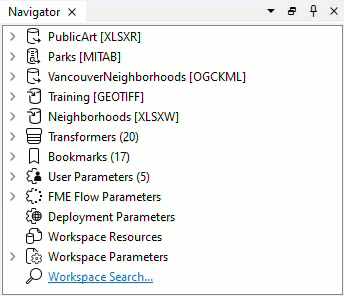
Data caching changes the timings you see, so the honest before-and-after comparison is a full run with it turned off. Expect the difference to be modest on data this small.
You have upgraded the transformers, moved filtering and attribute removal ahead of the work that depends on them, and enabled parameters that let FME release features early instead of holding them. The overall gain is slight at this data volume, but the workspace is better designed and will scale further than the one you started with.